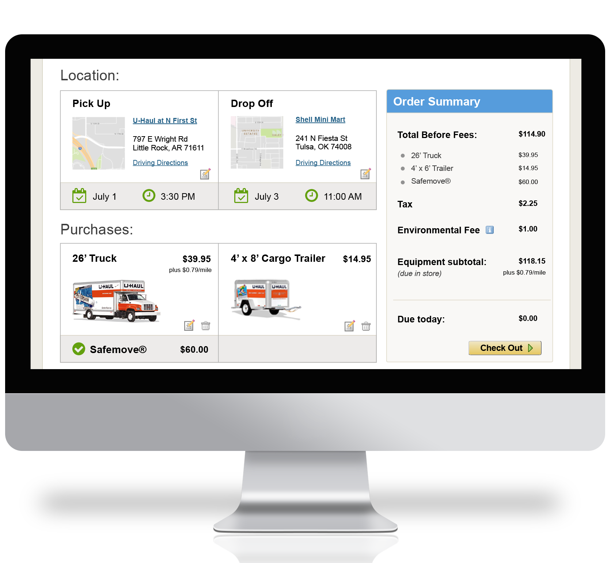

U-Haul Reservation Redesign
task
Reimagine how a user experiences the U-haul equipment reservation process, beginning from the landing page.
personas
Design for first-time movers, with no self-towing experience, who could be overwhelmed by the site’s options. Think of users with needs beyond just moving between homes.
current process
The current process includes 4 upsell pages before the checkout, frustrating users with unnecessary steps
The process does not alert users if equipment they select is unavailable in their area until after they chose a pick up location.
U-Haul’s self-storage product, the U-Box, is confusing to users because its name does not make its function immediately apparent.
my role
I worked with a team of 4 other UX designers to brainstorm ideas together and each designer created individual wireframe solutions. I contributed a full wireframe and mock-ups of 2 of our wireframe concepts. The U-Haul.com live site will reflect the ideas approved by U-Haul corporate leadership.
my creative process
the interface
equipment filter form
I used colors consistent with the branding guide, utilizing soft beige as the backdrop of the form containers, consistent with the style guide. I integrated the filter drop-down options into a sentence to make them easy to understand. I made U-Haul's 4 most popular services easily accessed by just changing tabs on one page, accenting the inactive tabs in the site's signature orange color.

equipment bundle design + upsell
I designed the bundle displays using visual sectioning, clearly highlighting each item's price and including the call-to-action "add bundle to cart" right next to the entire bundle's total, leading the consumer's eye the whole way. I designed the add-ons to be added to the bundle with a single click, elimating extra steps that could make customers reconsider the additional purchases.

pick up location
I placed the item rental information at the top of the screen, leaving no doubt in the customer's mind what they were picking up. I highlighted the costumer's biggest concern, the distance of each pickup location, in blue and placed large orange markers on the map corresponding to each location.
review order
I divided the review order page into easily-scannable sections, organizing by location and purchases. I included information specific to each subsection as shaded bars attached the section with brightly colored icons to remind the customer of the time and date details.
